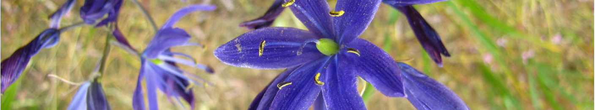

Resources
- Film (documentary): Muffins for Granny
- Book (non-fiction): The Inconvenient Indian, Thomas King
- Book (fiction): Indian Horse, Richard Wagamese
- Alanis Obomsawin retrospective exhibit (Van Art Gallery 2023)
- Any book by Louise Erdrich (fiction)
- Film: Bones of Crows, Marie Clements
- Book (non-fiction): The Dawn of Everything, Graeber and Wengrow
- Book (essay collection): On the Cusp of Contact - Gender, Space and Race in the * Colonization of BC, Jean Barman
- Book (non-fiction): 21 Things you May not Know about the Indian Act, Bob Joseph
- Book (non-fiction): Braiding Sweetgrass, Robin Wall Kimerer
- Local Contexts Website: https://localcontexts.org/
To Read/Watch Film: Becoming Nakuset
Workshops
Cultural Humility
From Connections Grant reference Battiste, Marie. 2005. “Indigenous Knowledge: Foundations for First Nations.” WINHEC: International Journal of Indigenous Education Scholarship, (1): 1-17.
Lee, Annette S., William Wilson, Jeff Tibbetts, Cark Gawboy, Anne Meyer, Wilfred Buck, Jim Knutson-Kolodzne, David Pantalony. 2019. “Celestial calendar-paintings and culture-based digital storytelling: cross-cultural, interdisciplinary, STEM/STEAM resources for authentic astronomy education engagement.” EPJ Web of Conferences 200, 01002 (2019). https://doi.org/10.1051/epjconf/201920001002. Menzies, E. 2019. “Know Your Nature.” Accessed April 30, 2023. https://www.restorativeducation.com/copy-of-practice. Norman, E.S. 2012. “Cultural politics and transboundary resource governance in the Salish Sea.” Water Alternatives 5 (1): 138-160. https://www.water-alternatives.org/index.php/allabs/162-a5-1-9/file. Tuck, Eve, and K. Wayne Yang. 2012. “Decolonization is not a metaphor.” Education & Society 1, no. 1 (2012): 1-40. https://jps.library.utoronto.ca/index.php/des/article/view/18630. —. 2014. “R-words: Refusing research.” In Humanizing research: Decolonizing qualitative inquiry with youth and communities, edited by Django Paris and Maisha T. Winn, 223-248. Los Angeles: SAGE Publications. “The Resurgence of the Salmon People, Part 1,” April 2, 2021. https://www.youtube.com/watch?v=sIr3Rd6UQlE.
Australian Indigenous Governance Institute. “Indigenous Data Sovereignty. Data for Governance: Governance of Data.” 2018 https://static1.squarespace.com/static/5b3043afb40b9d20411f3512/t/5b70e7742b6a28f3a0e14683/1534125946810/Indigenous+Data+Sovereignty+Summit+June+2018+Briefing+Paper.pdf
Indigenous Data Sovereignty. 2018 “Communique.” https://static1.squarespace.com/static/5b3043afb40b9d20411f3512/t/63ed934fe861fa061ebb9202/1676514134724/Communique-Indigenous-Data-Sovereignty-Summit.pdf
Salish Sea / Colonial Boundary / Indigenous Mapping
Rose-Redwood, Reuben, Natchee Blu Barnd, Annita Hetoevėhotohke’E. Lucchesi, Sharon Dias, and Wil Patrick. “Decolonizing the map: Recentering Indigenous mappings.” Cartographica: The International Journal for Geographic Information and Geovisualization 55, no. 3 (2020): 151-162.https://muse-jhu-edu.ocadu.idm.oclc.org/article/766913/pdf
Indigenous design methods
Tunstall, Elizabeth (Dori). 2023. Decolonizing Design: A Cultural Justice Guidebook. The MIT Press.
Sheehan, Norman W. “Indigenous knowledge and respectful design: An evidence-based approach.” Design Issues 27, no. 4 (2011): 68-80. https://direct.mit.edu/desi/article-abstract/27/4/68/69058
Indigenous ways of knowing, biodiversity classification
Shiva, Vandana. 1997. “BIOPIRACY: THE PLUNDER OF NATURE AND KNOWLEDGE.” https://repository.library.georgetown.edu/handle/10822/546063
Agrawal, Arun. “Dismantling the divide between indigenous and scientific knowledge.” Development and change 26, no. 3 (1995): 413-439. https://onlinelibrary.wiley.com/doi/abs/10.1111/j.1467-7660.1995.tb00560.x
Data sovereignty
GIDA (Global Indigenous Data Alliance) Guidelines for Data Sharing Respecting Indigenous Data Sovereignty
Kukutai, Tahu, and John Taylor. 2016. bioIndigenous data sovereignty: Toward an agenda. ANU press.
Rowe, Robyn K., West, Kiri, Carroll, Stephanie R. 2022. “The Indigenous World 2022: Indigenous Data Sovereignty” https://www.iwgia.org/en/indigenous-data-sovereignty/4699-iw-2022-indigenous-data-sovereignty.html
Walter, Maggie, Raymond Lovett, Bobby Maher, Bhiamie Williamson, Jacob Prehn, Gawaian Bodkin‐Andrews, and Vanessa Lee. 2021. “Indigenous data sovereignty in the era of big data and open data.” Australian Journal of Social Issues 56, no. 2 (2021): 143-156. https://doi.org/10.1002/ajs4.141